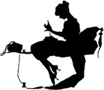

About VintageSewing.info
.VintageSewing.info is the publishing site of the Vintage Sewing Reference Library, Inc. a nonprofit public benefit corporation which publishes public domain vintage sewing, fashion, and lifestyle books and images, rescuing primary source reference material from obscurity to freely share with anyone who searches for it. We especially want to provide this information to recreationists and costumers so they can make design and construction choices from knowledge, not ignorance.
Origins of VintageSewing.info
VintageSewing.info began in 1997 as a site on Geocities (a free "homepage" site) when our founder acquired her great-grandmother's sewing library. It was a tribute to Elsie Anna White (1901–1986), our founder's great grandmother, a strong and capable woman who supported herself in the second half of her life using the sewing skills she had learned from many of the correspondence courses and books now published on this site.
Elsie White was the first born of fifteen children in a farming family in Northfield, Minnesota, and had to "work in the fields like a man." She was married in 1921, had three daughters, and in the mid-1940's divorced her alcoholic husband and moved to California (where two of her daughters had also moved). She was employed at Golden Bear Sportswear in San Francisco, making tailored jackets from leathers, suedes, and wools, first as a stitcher, then as head stitcher, and became the "problem fixer," the person who sorted out the sewing mistakes of other stitchers and helped keep the sewing machines running. She supplemented her income through millinery, custom dressmaking, and upholstery, was a skilled pattern drafter (her teen-aged granddaughter—our founder's mother—would show her a picture of a dress in a magazine, and she would draft the pattern and make the dress), and she had the ability to "make it work" even if there wasn't enough yardage. She continued to take sewing courses and read sewing books until she retired at age 75.
Milestones
In 1998 we acquired the domain name "VintageSewing.com" and moved into the world of paid hosting, with no banner ads and no pop-up windows.
In March 2002, we acquired the newly created (and more appropriate) top-level domain of .info, and released .com.
In March 2004, Vintage Sewing Reference Library became Vintage Sewing Reference Library, Inc., as we upgraded from hobby to a separate legal entity, incorporating as a nonprofit public benefit corporation (thus allowing us to use the "corporate we" instead of the "imperial we").